Ironspine retains two existing buttresses as a limited arrival cue (6.2); the whole habitat remains visual HOLD 2.8 and target likeness 2.4. Its ordinary local circuit completes in 277.802 s / 517.094 m with 83 stops, no adaptive detours, health 5→5 and 10 iron actually collected. Complete progress/inventory/ecology reload is exact. Actual rock contact and 2→0→2 streaming/ray proof pass. The custom bank's three candidates all close HOLD; no GLB or fourth attempt. Thornprowler R1 retains independently reviewed 8.2 anatomy, 23 meshes / 770 triangles; actual baked factory, existing Fungal encounter and unchanged generic rusher fit pass. Required 1432 tests, verify/ZIP, exact portable continuation/original Camp and all three reviewed packaged Wildkin factories pass; ZIP 21598244 bytes / unpacked 46343886 bytes. No push.
Generated art sets direction. Actual screenshots and native renders establish only the results described. Continuous rotation continues with Fungal planning; Shatterfen's constrained preview was rejected.
Evidence and limitations · Independent visual review
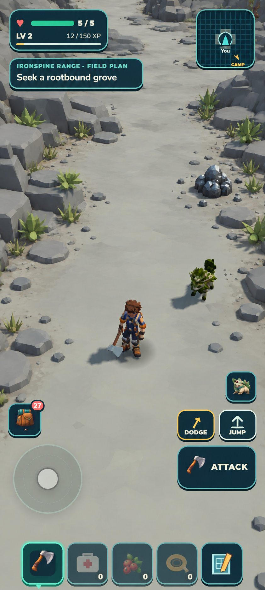
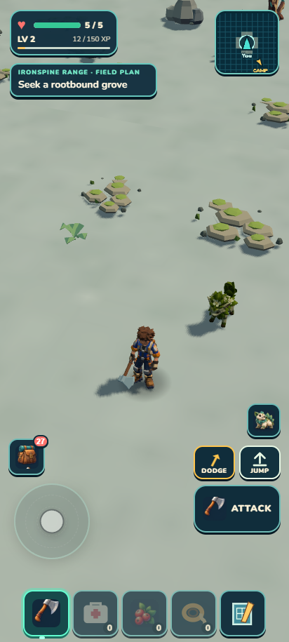
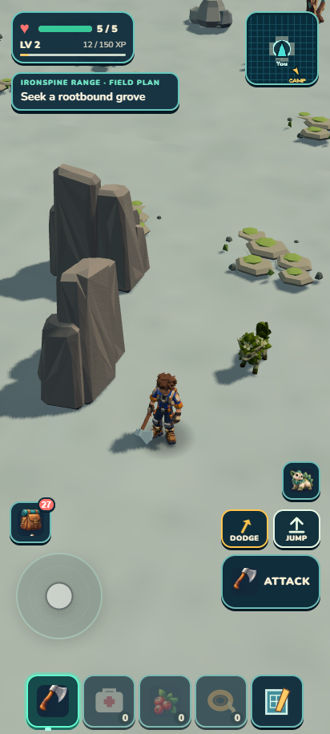
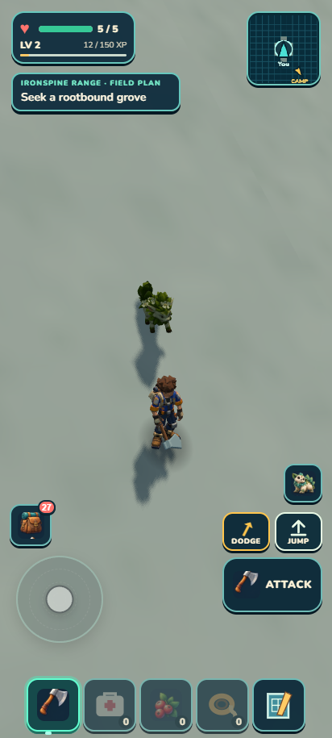
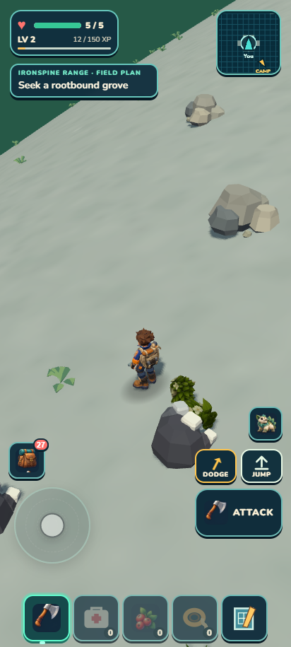
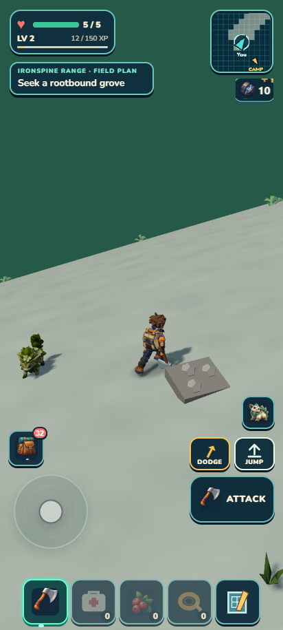
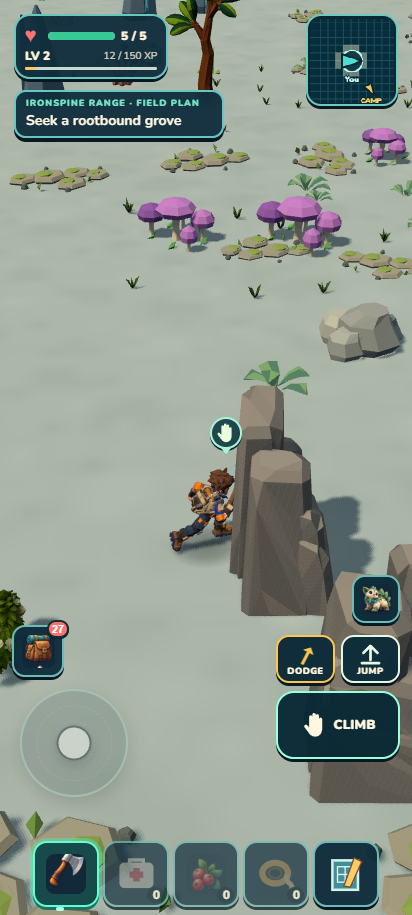
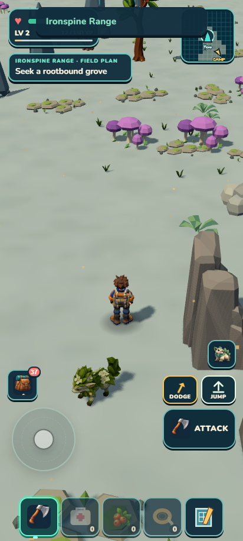
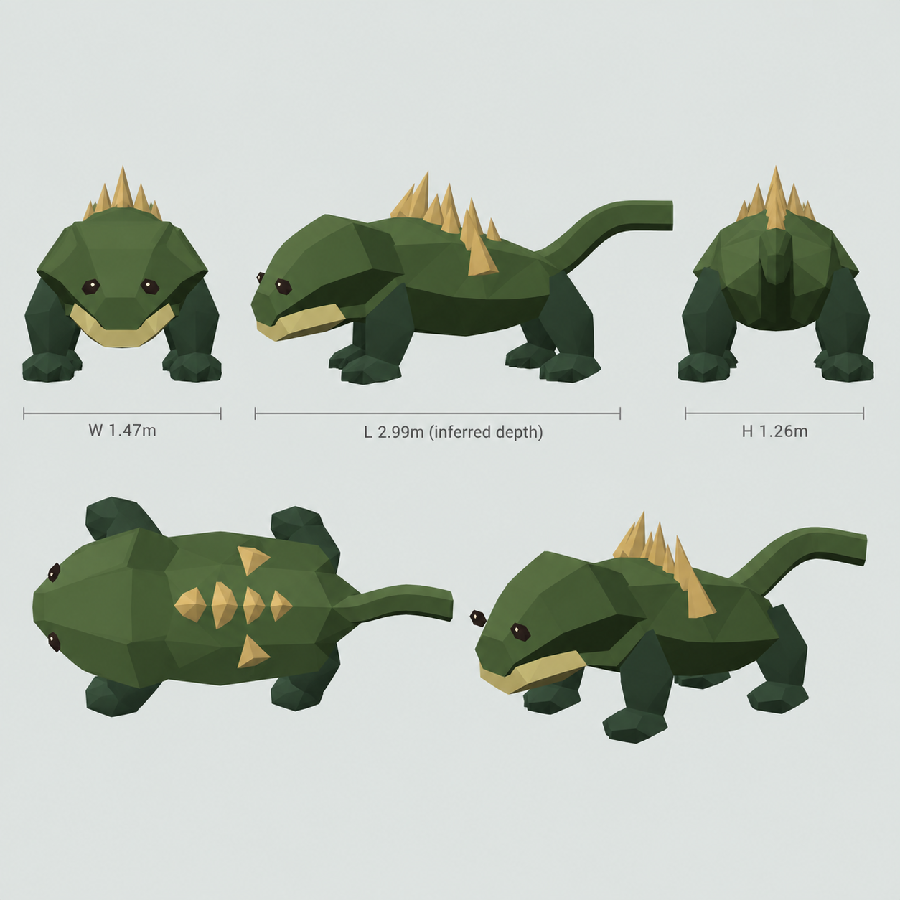
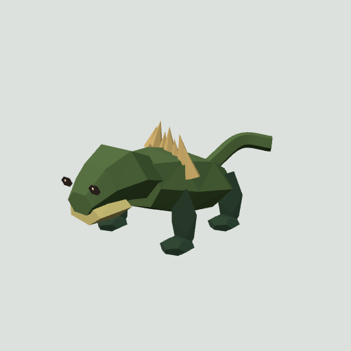
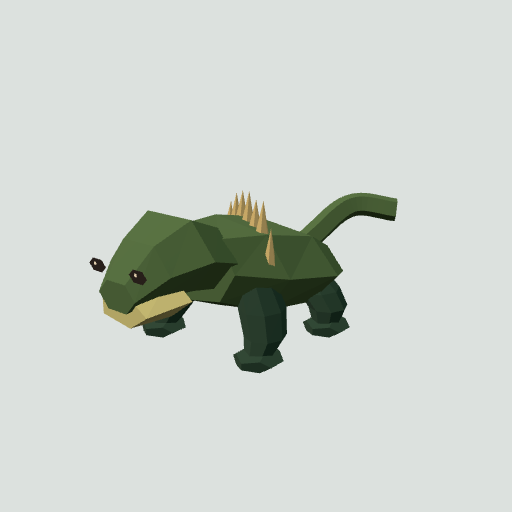
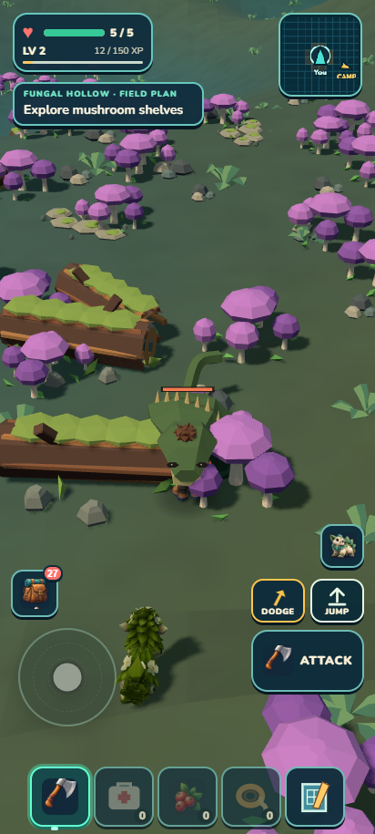